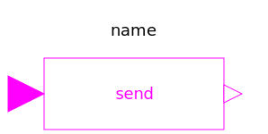
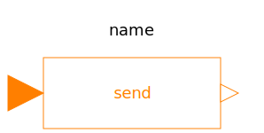
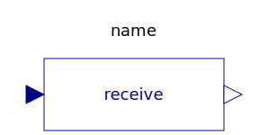
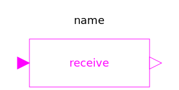

The components of this package should no longer be used. They are only provided for backward compatibility. It is much more convenient and more powerful to use "expandable connectors" for signal buses, see example BusUsage.
| Name | Description |
|---|---|
| Obsolete block to send Real signal to bus | |
|  SendBoolean | Obsolete block to send Boolean signal to bus |
|  SendInteger | Obsolete block to send Integer signal to bus |
|  ReceiveReal | Obsolete block to receive Real signal from bus |
|  ReceiveBoolean | Obsolete block to receive Boolean signal from bus |
| Obsolete block to receive Integer signal from bus |